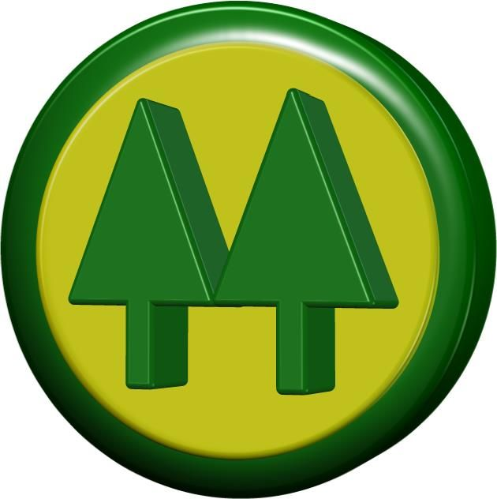

Onde deixaram eu trabalhar:
Prefeitura Municipal de São Leopoldo - Estágio Curso Técnico de TI - Fev 2005 - Ago 2005 Prestei suporte técnico de informática, realizei manutenção e instalação de computadores e periféricos.
Cooperativa de Produção Cristo Rei LTDA - Auxiliar de Escritório (principalmente) - Jan 2007 - Dez 2013  Prestava suporte técnico de informática, e numa urgência pediram ajuda para trabalhar no escritório faturando. Eram pessoas de mais idade, e não sabiam usar o computador. Se lembraram de mim, fui para tapar buraco e fiquei bastante tempo.
Continuei fazendo a manutenção dos computadores e da rede, fiz o site da empresa (ainda todo em tabelas e HTML4) muito feio por sinal, fundo azul marinho-roxo, conseguia até ser bonito, era exótico. Os botões do menu eram a barra de tarefas do Windows XP. Atualizei o catálogo da empresa e fiz alguns flyers. Ajudava no atendimento ao cliente, e na entrega de mercadorias para as transportadoras.
*Coloquei o símbolo do Cooperativismo porque não achei nenhuma foto da empresa na internet